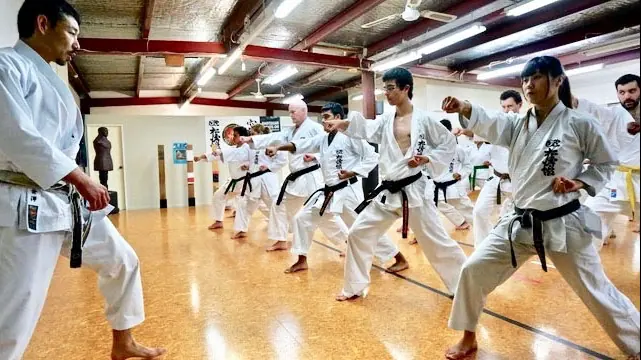
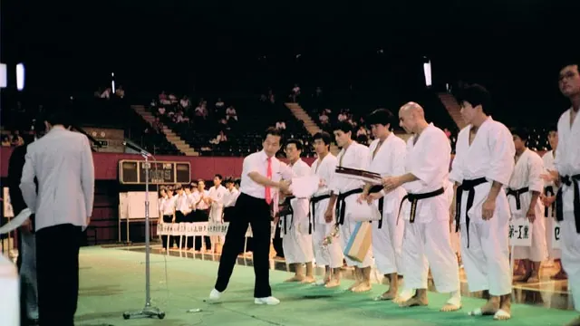
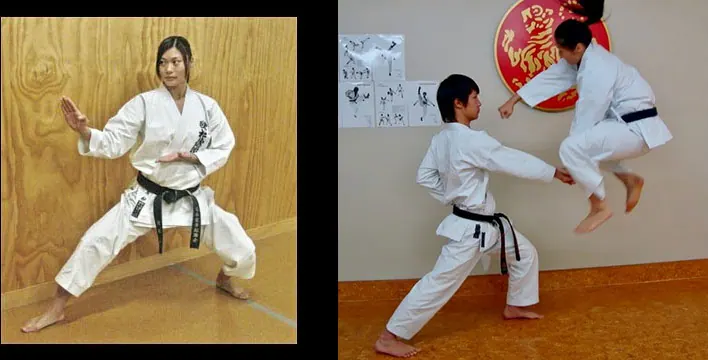
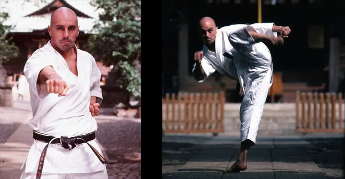
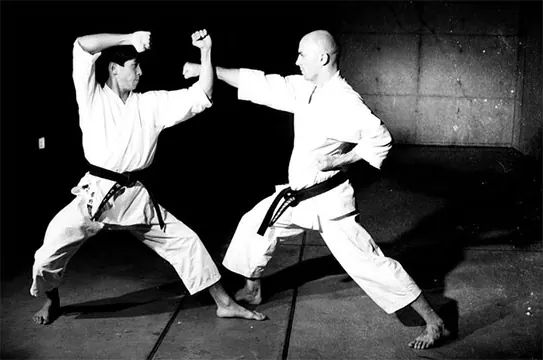
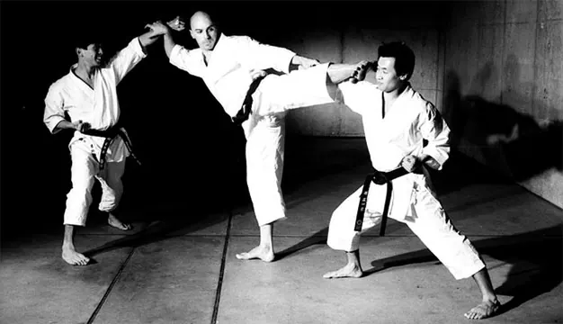
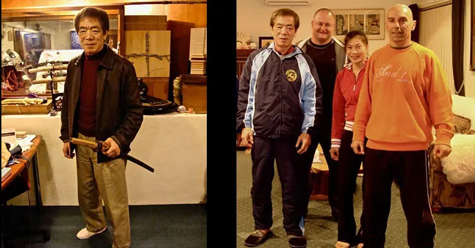
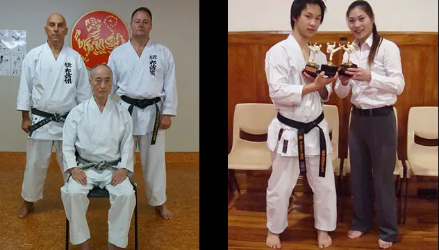

Traditional Shotokan Karate · New Lynn, Auckland
Train in a proper Japanese karate dojo
Traditional Japanese Shotokan Karate for juniors, youths, adults and family groups, taught by NZ's highest Japanese qualified karate teachers. No gimmicks, proper tuition.



- Only NZ affiliate of SKIF Japan
- Japan qualified 7th Dan Instructor
- Your first two lessons are free
What we do
Classes for every age and level
Our dojo welcomes women and men at any fitness level, with groups for adults and children from beginners to advanced.
- 01
Junior Classes
Specialised classes for juniors from the age of 5-12.
- 02
Adult Classes
Classes are available for seniors and also parents, at any fitness level, from beginners to advanced.
- 03
Self Defence
Regular practice of Karate-Do enables students to defend themselves through comprehensive and practical technique and strategy.
- 04
Fitness & Stamina
A comprehensive warm-up and systematic training system builds flexibility, fitness and stamina when practised consistently.
- 05
Mind, Body & Spirit
Training that unifies body, mind and spirit for holistic well-being and harmony.
- 06
Respect & Discipline
Students learn good manners, etiquette and self-discipline, the basis of true Karate-Do.
About
Our karate family
Shotokan Karate International Federation NZ is a traditional Japanese Shotokan karate federation. Our club is based on respect, etiquette and hard training in the old Japanese tradition, with knowledge of Japanese culture, language and proper karate ethics.
Goran Glucina (Shihan) spent 10 years in Japan full time training in Shotokan Karate and Ryukyu Kobujitsu, training under the leading Masters in Japan. He leads a team of experienced instructors devoted to teaching proper, traditional Japanese karate.
Through traditional Karate-Do, SKIF NZ endeavours to instil in students an understanding and respect for oneself, for others, and harmony within our world.

Gallery
A closer look
Photos from Shotokan Karate International Federation NZ.




Get in touch
Enrolments open now
Email us or text or call on 021-2377556 to book your free training session.
021-2377556PrizenLabs · concept preview
Like this new look for Shotokan Karate International Federation NZ?
This concept was built from the content on your current website. We can make it your real site, on your own domain, in 48 hours.
- Mobile-first, fast-loading design
- Your wording, photos and details reviewed with you before launch
- Hosted on your existing domain
Pricing & next steps
Get it live in 48hNo obligation. Nothing changes on your current site unless you say so.